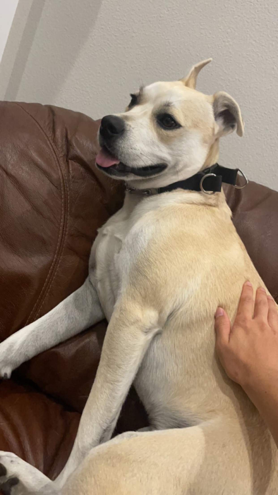

Edward Chen
echen52@illinois.edu
Hello and welcome to my website! I am an experienced data scientist currently looking for opportunities in the data science and financial services space.
From 2017-2024, I worked for USAA Federal Savings Bank in the Bank Credit Risk Modeling team.
I am currently working on my M.S. in Computer Science from the University of Illinois at Urbana-Champaign. I received a M.S. in Statistics from Texas A&M University in 2021 and graduated with my B.A. in Mathematics and Economics from Cornell University in 2017.
Please feel free to get in touch if we share interests!